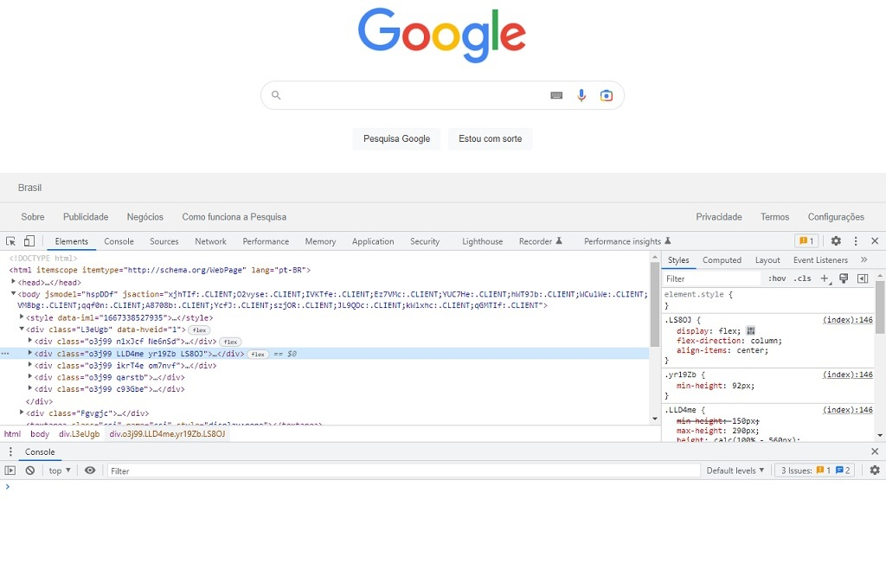
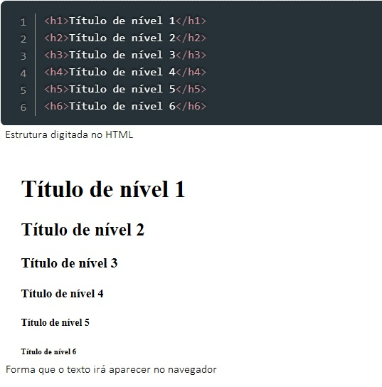

HTML é o que permite criar uma estrutura básica de um site, ele serve para dar significado e organizar as informações de uma página na web. É na estrutura do HTML que se estabelecem as diferentes distribuições e tamanhos para titulos, sub-títulos, parágrafos, imagens ou outro elemento.
E como é feito então, essa estrutura em HTML até a visualização final para o usuário? Através de um documetno HTML, o navegador web faz a leitura do arquivo e renderiza o seu conteúdo para o usuário final possa ver, ou seja, o navegador junta todos os dados, processa e transforma no visual que vemos no site.
Você pode ver um pouco mais sobre HTML aqui.
TAGS são símbolos que separam um conteúdo do outro. Ela serve como uma informação para o navegador saber com qual tipo de conteúdo está lidando, como parágrafos, títulos, tabelas e etc. Os navegadores são capazes de intepretarem quais TAGS existem dentro do documento HTML e exibir uma página de acordo com os tipos utilizados nessa estrutura.
A maioria das TAGS precisam de abertura e fechamento e isso acontece da seguinte forma: para se iniciar é com o sinal de < e para finalizar, utiliza-se os sinais />. Uma curiosidade é que as TAGS não diferenciam letras maiscúlas ou minúsculas, mas, é sempre recomendável que se tenha um estilo comum ao escreve-las em um documento, para que se siga um padrão e tenha clareza de código.Se você quer saber um pouco mais sobre as TAGS clique aqui.
Os Atributos são comandos ou informações que passamos para as Tags para que elas se comportem da maneira esperada, é como uma informação adicional que incluimos na nossa Tag, para que ela possa cumprir melhor a sua função, atribuindo á ela algum detalhe ou variação.
Como exemplo, podemos usar a Tag de imagem. A função dela é exibir uma imagem no navegador. O que essa Tag precisa saber é o caminho dessa imagem, e para isso usamos algum atributo.
São vários Atributos que podem ser usados na sua Tag, como exemplos temos class, id, style, title e etc.
Se quiser aprender um pouco mais sobre os Atributos, você pode clicar aqui.
A Lista Ordenada é utlizada com a Tag ol (Ordered List). Com essa Tag, não é necessário colocar números antes da escrita, apenas os itens que deseja que apareça. O próprio navegador fará a contagem automaticamente ao interpretar o código HTML que foi criado, ou seja, é inserido ao lado esquerdo de cada nova informação, classificando esses itens numa lista ordenada numericamente, por exemplo.
Ela é usada assim: "< ol > e < /ol >" de dentro dela, é preciso inserir a Tag "< li> e < /li >" antes de colocar um novo item da lista (veja aqui mais informações), e como exemplo, no navegador ficaria dessa forma:
Já Tag ul é a lista sem uma ordem lógica (Unordered List). Nela, os itens da lista aparecem na ordem que for colocada no código HTML, não tendo nenhuma numeração ou lógica de ordem, apenas seguem a ordem descrita no código.
Ela é usada assim: "< ul > e < /ul >" e ficaria dessa forma, no navegador:
Basicamente, a diferença entre a Lista Ordenada e a Lista Não Ordenada, é que a primeira lista seus itens com uma ordem númerica automática, e a segunda lista seus itens com uma marcação.
Quer aprender um pouco mais sobre essas essas Tags? Clique aqui então.
Essa é uma ferramenta onde é permitido visualizar o código-fonte de qualquer website. Além de dar a oportunidade de fazer qualquer alterações temporárias e analisar o resultado em tempo real, sem modificar o código-fonte original. É bem simples, com o botão direito do mouse em qualquer website, clique em Inspecionar e conseguirá ver o código-fonte, imagens, o CSS forma o design, assim com fontes e muito mais.
É uma boa oportunidade para quem quer entender como a página funciona, alterando seus código e sabendo o que significa, por exemplo, cada Tag ou Atributo estruturado naquela page. Ao clicar em Inspecionar, sua tela ficaria dessa forma:
Se quer aprender um pouco mais sobre inspecionar elementos num site, clique aqui
No HTML, há seis níveis de cabeçalhos/títulos que podem ser utilizados por meio das Tags "h1, h2, h3, h4, h5 e h6", sendo o "h1" tendo a escrita maior e mais relevante e o "h6" tendo a menor escrita de todos. Esse é um dos principais objetivos do HTML, dar estrutura de texto e significado para que um navegador o exiba corretamente, também conhecido como semântica.
O texto mais estruturado é composto por títulos e parágrafos, é isso que faz a experiência de leitura ser mais fácial. Em HTML, cada parágrafo é separado pela Tag < p > e < /p >, sendo abertura e fechamento. E cada título é utilizado as Tags h1 a h6.
Como exemplo, usando as Tags h1 a h6, ficaria da seguinte forma:
Além dessa Tag "h", que podemos utilizar para escrever, existem também outras formas de formatação utilizadas no HTML.
Esses são apenas alguns exemplos de Tags que podem ser utilizadas em textos excritos no HTML.
Se tem interesse em ver mais sobre as formatações de texto no HTML, clique aqui.